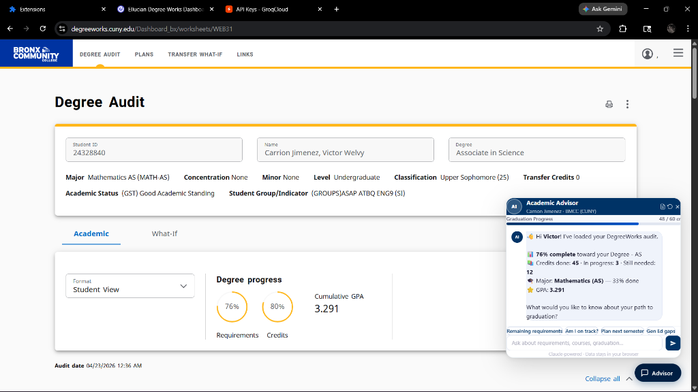
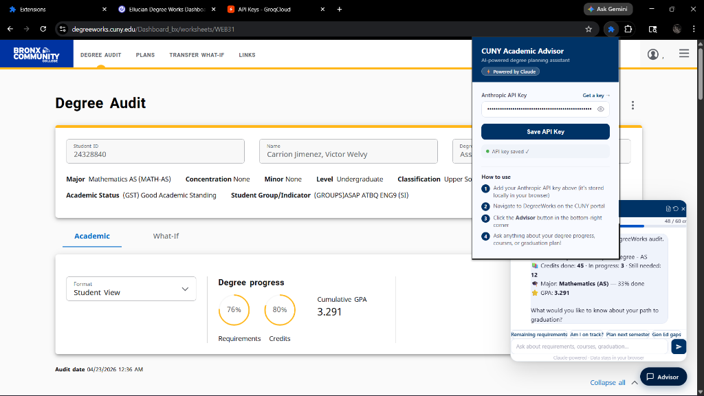

An intelligent browser extension that reads your DegreeWorks audit and gives you personalized advice — courses to take, transfer plans, and graduation roadmaps.


Built specifically for CUNY students, powered by AI that understands your degree requirements.
Automatically reads your degree audit — credits completed, GPA, major requirements, and Gen Ed status — directly from your browser.
Powered by Claude AI, get instant answers about remaining requirements, course recommendations, and personalized graduation plans.
Get smart suggestions for your next semester's course load based on prerequisites, availability, and your optimal path to graduation.
Explore transfer options across CUNY schools. See which credits transfer, find strong programs for your major, and plan your move.
Monitor your cumulative and major GPA in real-time. Get alerts and strategies if your GPA needs attention for your goals.
Your data never leaves your browser. The AI processes everything locally using your own API key — no data collection, ever.
No complicated setup. Install, add your key, and start getting AI-powered academic advice.
Add CUNY Academic Advisor from the Chrome Web Store with a single click. It's lightweight and free.
Enter your Anthropic API key — it's stored locally in your browser and never sent to any external server.
Log in to your CUNY account and go to DegreeWorks. The extension will automatically detect your degree audit.
Click the Advisor button and ask anything — remaining requirements, next semester plans, transfer options, and more.
Navigate the CUNY transfer process with confidence. Our AI knows the requirements across all 25 campuses and can build a personalized plan for your move.
See exactly which courses at other CUNY schools satisfy your remaining requirements.
Discover which CUNY colleges offer the strongest programs for your major and career goals.
Know before you transfer — see which credits will carry over and which courses you'll still need.
Hear from students who used CUNY Advisor to plan their academic journey.
I was lost trying to figure out which Gen Eds I still needed. This extension broke it all down in seconds and suggested the best courses for next semester.
The transfer planning feature saved me a whole semester. I knew exactly which credits would transfer to Baruch before I even applied.
It's like having a real advisor available 24/7. I ask it about my graduation timeline and it gives me a clear plan every time. A must-have for any CUNY student.
Install CUNY Academic Advisor today — it's free, private, and built for CUNY students like you.
Install Free Extension